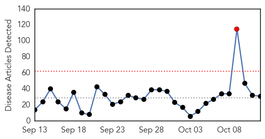
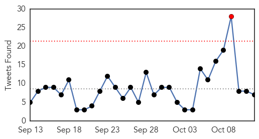
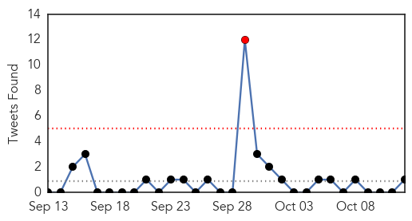

Ebola
30-Day Web Trend
1 alerts, 0 warnings

30-Day Twitter Trend
1 alerts, 0 warnings

Article Locations

Article Confidences

Top Articles:
- 1.000
- 80 People Being Monitored in Dallas Ebola Case
- 1.000
- Response in Sierra Leone to Ebola Outbreak Saved 40,000 Lives
- 0.999
- Scottish Nurse Who Recovered From Ebola Is Back In Isolation
- 0.998
- Nigeria Ebola Scare: Government resolves cases
- 0.997
- Ebola vaccine trial underway in Sierra Leone
- 0.997
- Close contacts of British Ebola nurse monitored
- 0.993
- ‘I Felt Privileged’: Journalist Decries MSF Over EVD Treatment
- 0.989
- Pauline Cafferkey: 58 close contacts of Ebola nurse being monitored
- 0.989
- Ebola-infected nurse Pauline Cafferkey's family and friends given unlicensed vaccine after her relapse
- 0.989
- Dozens of friends of Pauline Cafferkey are given an unlicensed Ebola vaccine after nurse's relapse
- 0.987
- 58 Monitored For Deadly Virus
- 0.981
- VSO Disseminates Research Findings Report of Impact of Ebola Virus Disease on Delivery of Routine Maternal Health Services
- 0.981
- Ebola nurse's close contacts identified
- 0.981
- Ebola: Scottish nurse Pauline Cafferkey back in isolation
- 0.979
- El Niño predictions signal urgent need to prepare for epidemic in eastern Africa
- 0.976
- Friends and family of Pauline Cafferkey given the Ebola vaccine
- 0.973
- Johnson & Johnson begins clinical trial of Ebola vaccine regimen in Sierra Leone
- 0.960
- Ebola Resurgence: ABC Secretariat stems the tide
- 0.907
- Celebrating NTD Success Stories: Good News from Haiti
- 0.869
- Global experts warn of emerging threats
- 0.856
- Reports of Ebola Outbreak in Calabar are Untrue
- 0.815
- German health minister opens World Health Summit in Berlin
- 0.814
- ReSurge Africa team visit Sierra Leone project – September 2015 « News
- 0.798
- German health minister opens World Health Summit in Berlin
- 0.762
- Sister of Ebola nurse attacks ‘diabolical’ quality of treatment
- 0.729
- Tu Youyou's Nobel Prize promotes China-Africa health cooperation
- 0.700
- In post-Ebola Sierra Leone, aid is needed, but not all is helpful
- 0.699
- ALICOR President: Gov’t Did Not Appreciate Community Radios
- 0.663
- Nurse Pauline Cafferkey still in 'serious' condition as she is treated for ebola at Royal Free for second time
- 0.612
- Researchers: IOM recommendations could have altered course of Texas Ebola case
- 0.531
- International Day of the Girl Child : UNICEF announce new education initiative for 3,000 teenage pregnant girls
Top Tweets:
- 0.798
- Ebola toll in Sierra Leone 'could have been halved if UK had acted earlier' - The Guardian http://t.co/AWRHH27JZ8 ebola EVD
- 0.726
- RT: SierraLeone Ebola virus disease cases at a standstill (green) but medically similar disease still rising (pink) http://t.co…
- 0.707
- In post-Ebola Sierra Leone aid is needed but not all is helpful - Christian Science Monitor http://t.co/h8EAEeLntK ebola EVD
- 0.600
- New compound found to cure Ebola in monkeys - Medical News Today http://t.co/epMsVeBYiu ebola EVD
- 0.594
- Fifteen Ebola Suspects Released From Quarantine As Nigerian Government Denies ... - Tech Times http://t.co/1Q27ZFIop3 ebola EVD
- 0.541
- Ebola Resurgence: ABC Secretariat stems the tide - Sierra Express Media http://t.co/txTHjbZhWm ebola EVD
- 0.532
- Ebola: One Year Later - Medscape http://t.co/SG5h1p73N9 ebola EVD
Unknown
30-Day Web Trend
0 alerts, 0 warnings

30-Day Twitter Trend
1 alerts, 0 warnings

Article Locations

Article Confidences
Top Articles:
- 0.999
- South Korean man cleared of Mers tests positive again, Asia News & Top Stories
- 0.994
- Discharged MERS patient re-diagnosed with the virus
- 0.990
- Colorado child polio-like cases being investigated
- 0.956
- Hand, foot and mouth disease hits Savannah Primary
- 0.949
- 8-year-old boy dies of rare, vaccine-derived poliovirus in Laos
- 0.946
- Circulating vaccine-derived poliovirus – Lao People’s Democratic Republic
- 0.929
- Norovirus Outbreak in Reno Area Schools Sickens Over 700
- 0.917
- Chicago Tribune
- 0.917
- Chicago Tribune
- 0.917
- Chicago Tribune
- 0.917
- Chicago Tribune
- 0.917
- Chicago Tribune
- 0.917
- Chicago Tribune
- 0.917
- Chicago Tribune
- 0.917
- Chicago Tribune
- 0.911
- High dose flu shot decreases hospitalizations for nursing home residents
- 0.899
- As world seeks to eradicate polio, Laos suffers vaccine-linked case
- 0.889
- Counterterrorism policies and practices: health and values at stake
- 0.839
- Staff Deaths at Leading Hospital Put India’s TB Battle in Spotlight
- 0.821
- Staff deaths at leading hospital put India's TB battle in spotlight
- 0.819
- Flu vaccine clinics begin around the area
- 0.818
- Staff deaths at leading hospital put India's TB battle in spotlight
- 0.814
- Woman dies of rabies; bat bite blamed for fatality
- 0.805
- Staff deaths at a Mumbai hospital put India’s TB battle in spotlight
- 0.768
- Staff deaths at leading hospital put India's TB battle in spotlight, news, Health News, AsiaOne YourHealth
- 0.757
- 2,184 HIV/Aids cases registered with Pims
- 0.746
- Olive Leaf Remove For Herpes
- 0.732
- Staff Deaths At Leading Hospital Put India's Tuberculosis Battle In Spotlight
- 0.707
- Washington Post reporter Rezaian ‘convicted’ in Tehran
- 0.707
- Six arrested over manhandling of Air France executives
- 0.705
- Snap vote to go ahead despite attacks, Turkish PM says
- 0.705
- Two Tunisian soldiers killed in clashes with jihadists near Algerian border
- 0.705
- Belarus re-elects 'last dictator in Europe' for fifth term
- 0.703
- Iraq probes claims IS group chief Baghdadi wounded in air strikes
- 0.702
- Erdogan under fire after Turkey suffers worst bombing ever
- 0.702
- ‘Knife terror will not defeat us,’ Netanyahu says of Jerusalem stabbings
- 0.694
- Unvaccinated Children In Ukraine At Heightened Risk Of Polio
- 0.693
- Two Madagascans sentenced to life for French couple's murder
- 0.693
- Syrian opposition rejects UN peace talks over Russian offensive
- 0.693
- French PM Valls in Saudi Arabia to sign ‘significant’ armaments deal
- 0.685
- Kazakh dissident tycoon to appeal French extradition order
- 0.685
- Guinea opposition rejects presidential vote, calls for protests
- 0.685
- Pro-EU campaigners launch ‘Britain Stronger in Europe’ drive
- 0.685
- Algeria shuts TV station after airing interview with former Islamist insurgent
- 0.673
- Staff deaths at hospital put TB battle in spotlight
- 0.655
- OUR OPINION: Chickenpox case sets right precedent for infectious outbreaks
- 0.651
- Toddlers in Maine Sickened by Same Strain of E. coli
- 0.648
- CDC Reports Additional Illnesses and DeathNewsInferno
- 0.630
- 6 children die from rabies
- 0.608
- Our View: Chickenpox case sets precedent for Maine outbreaks
Showing top 50 articles...
Top Tweets:
- 0.879
- RT: Flu Attack! How A Virus Invades Your Body http://t.co/DdC8b4qiLF flu virus health